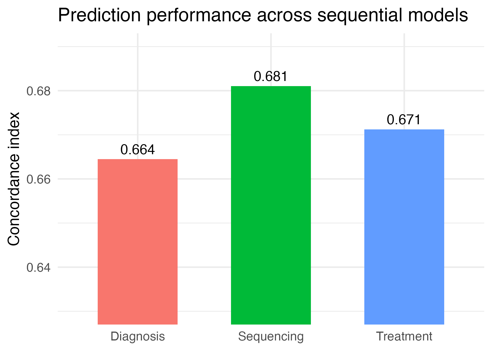
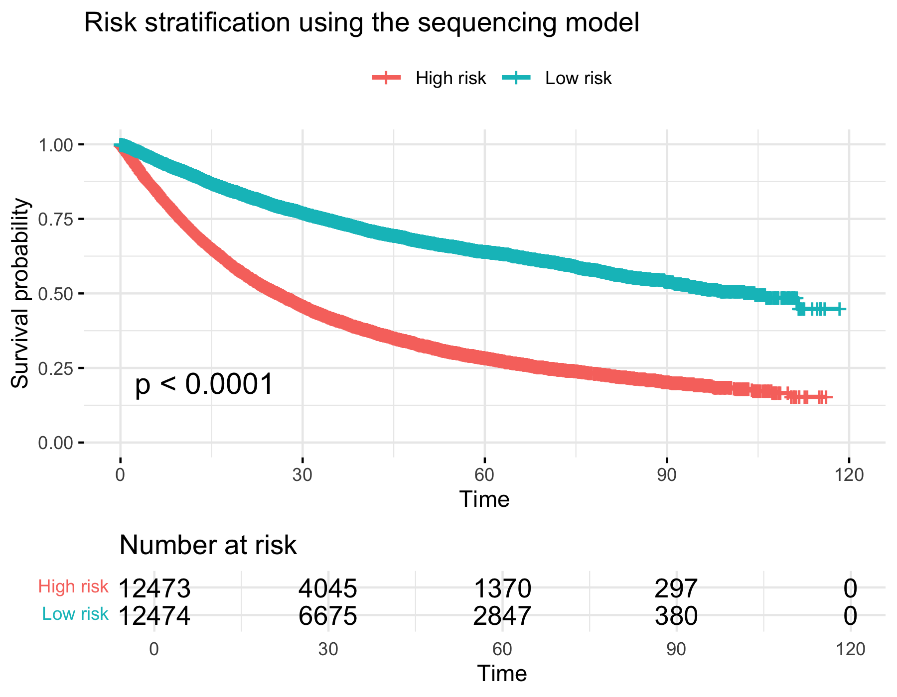

About
In survival analysis, the choice of time zero matters because it changes both the starting point of follow-up and the information available for prediction. In this project, diagnosis, sequencing, and treatment initiation were treated as three clinically meaningful time points.
The analysis used the MSK-CHORD cohort, a large real-world oncology dataset with linked clinical, genomic, and treatment timeline information. The outcome was overall survival in months.
The main question was whether survival prediction improves as more information becomes available along the clinical workflow.
Methods
Three sequential Cox proportional hazards models were fitted. The diagnosis-stage model used baseline clinical variables only. The sequencing-stage model added genomic features. The treatment-stage model further added treatment-related variables.
- Primary outcome: overall survival
- Clinical variables: age, gender, stage, cancer type
- Genomic variables: tumor mutational burden, TP53, KRAS, EGFR, and PIK3CA
- Treatment variables: first treatment subtype and time to first treatment
- Model evaluation: concordance index (C-index)
- Downstream analysis: Kaplan–Meier risk stratification using the best-performing model
Results
Genomic information improved prediction most at the sequencing stage.

The sequencing-stage model clearly separated patients into high-risk and low-risk groups.

Several genomic alterations were associated with survival in the sequencing-stage model.

Author
- Junzhe Shen · University of Michigan
This website presents the interim results of a BIOSTAT 629 project on survival prediction in the MSK-CHORD cohort.
Future work will include adding more genomic variables, improving treatment representation, and comparing prediction across cancer subtypes.